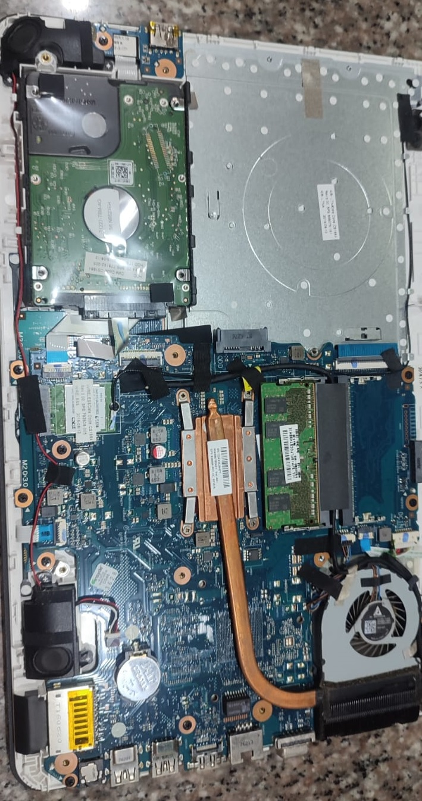
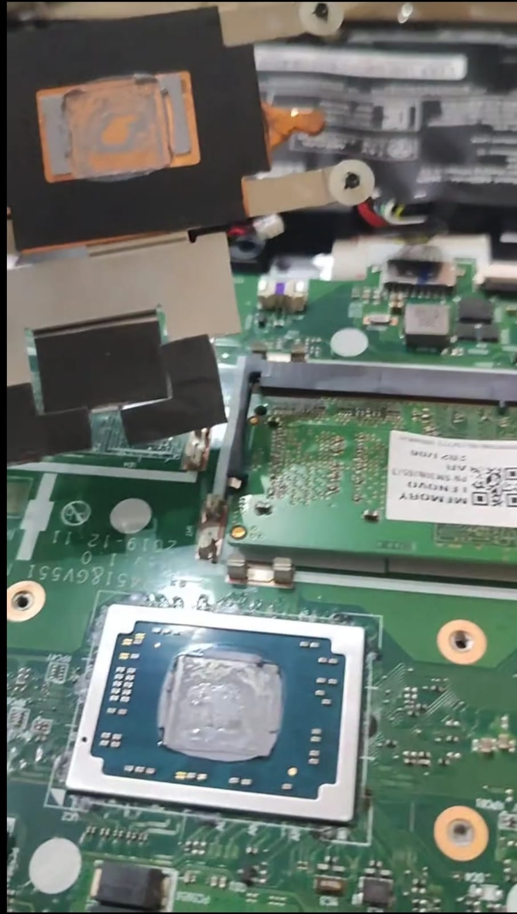
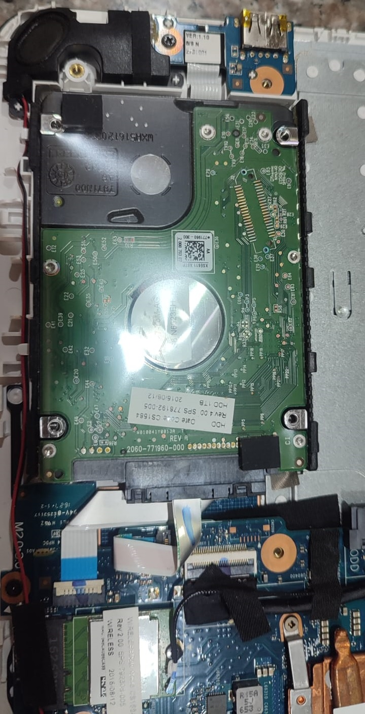
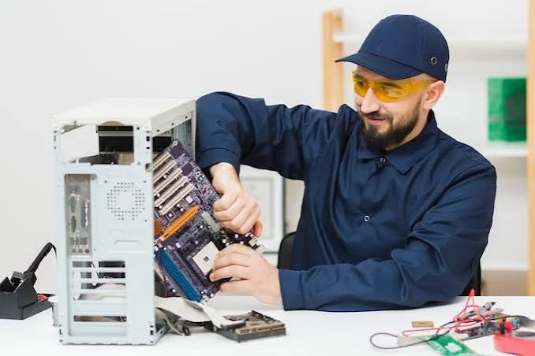
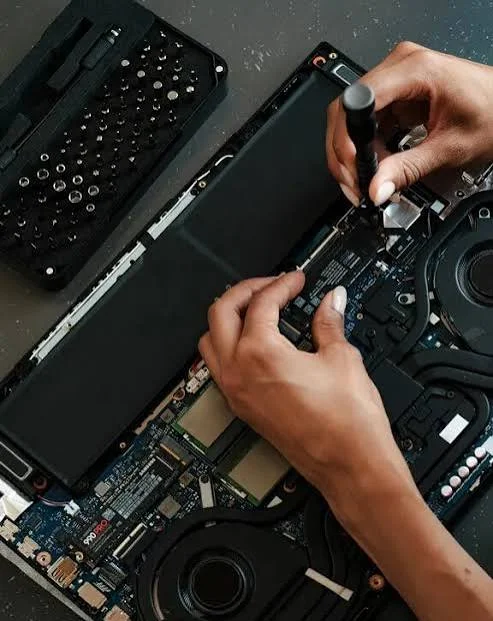

Nuestros trabajos
Trabajos realizados
Conoce algunos de los servicios técnicos realizados por nuestro equipo.




Mantenimiento, reparación y soporte técnico para computadoras, laptops e instalación de sistemas.

Realizamos diagnóstico, mantenimiento y optimización de equipos para mejorar su rendimiento, seguridad y vida útil.
Diagnóstico y reparación de laptops, PCs de escritorio y equipos todo en uno.
Limpieza interna, optimización del sistema y mejora del rendimiento.
Instalación de Windows, programas, respaldos y recuperación de información.
Activación e instalación de paquetes Office y Windows mediante control remoto, todo por internet sin moverte de tu lugar de trabajo. Servicio eficiente, rápido y funcional.
Mejoramos el rendimiento de tu equipo mediante reemplazo de discos HDD lentos por unidades SSD de alta velocidad y ampliación de memoria RAM. Ideal para computadoras con bajo rendimiento, arranque lento o poca capacidad de respuesta.
Eliminación de malware, virus y programas no deseados. Instalación y configuración de antivirus, además de actualización de claves y protección mediante asistencia remota. Mantén tu información segura y evita pérdida de archivos importantes.

En DV Computadoras brindamos soporte técnico profesional para hogares y pequeños negocios, ofreciendo soluciones rápidas y confiables.
Nuestro objetivo es recuperar, optimizar y proteger tus equipos tecnológicos con atención personalizada.
Trabajamos con compromiso, experiencia y soluciones adaptadas a cada cliente.
Analizamos cada equipo antes de realizar cualquier reparación.
Buscamos soluciones eficientes para reducir tiempos de espera.
Utilizamos procesos seguros para cuidar tus equipos.
Atención para hogares y pequeños negocios.
Aplicamos un proceso técnico organizado para ofrecer un servicio seguro, transparente y con garantía.
Registramos el estado del equipo y las fallas reportadas para iniciar un diagnóstico técnico confiable.
Analizamos hardware y software para determinar con precisión la causa del problema.
Aplicamos la solución adecuada para recuperar el rendimiento, estabilidad y seguridad del equipo.
Verificamos el funcionamiento antes de la entrega para garantizar un servicio confiable.
Muchos equipos empiezan a fallar con pequeñas señales que pasan desapercibidas. Identificar estos síntomas a tiempo ayuda a prevenir daños mayores, pérdida de información y reparaciones costosas.
Si tu computadora o laptop aumenta mucho su temperatura, puede afectar el procesador, disco y otros componentes internos.
Los apagados inesperados pueden ser causados por problemas de temperatura, energía, sistema o componentes dañados.
Un equipo lento puede necesitar limpieza, optimización del sistema, cambio a SSD o revisión de hardware.
Pantallas azules, bloqueos, programas que no responden o fallas constantes indican que necesita revisión técnica.
Sonidos fuertes del disco, ventilador o componentes pueden indicar desgaste o una posible falla.
Una batería deteriorada puede comenzar a expandirse, generando presión interna y riesgo de daños en la carcasa, placa madre y componentes internos. Una revisión a tiempo puede evitar daños irreversibles.
Cuando el disco duro o SSD tiene poco espacio disponible, el sistema pierde rendimiento, aumenta los tiempos de respuesta y puede presentar bloqueos o lentitud.
Si tu equipo no logra actualizar Windows, los programas funcionan lentamente o solo tu computadora presenta problemas de internet, puede requerir revisión del sistema, controladores y configuración de red.
Un mantenimiento preventivo a tiempo mantiene tu computadora funcionando mejor, evita gastos elevados y protege tu información importante.
No esperes a que tu equipo deje de funcionar.Conoce algunos de los servicios técnicos realizados por nuestro equipo.



Solicita un diagnóstico y recibe atención profesional.